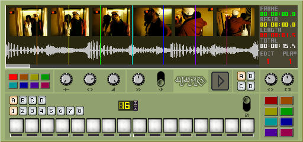

eleKtroniKa
help file
VP10 module (player)
play a single clip using multiple trigger points, play speed adjustment, and adjust clip length

input/output
1 audio out
1 video out
properties
select cue points for 1-8 each with a different colour
adjust position 1-8
adjust pitch 1-8
adjust level 1-8
scratch
shutter
pattern mode
states (bank of cue points, position and pitch values)
global pitch -
adjust master speed
view size - length of clip
launch 1-8 - each coloured button launches the clip from its respective position, for its custom duration and pitch
use the grey slider to alter the view of the clip
copyright aestesis
2005
www.aestesis.org